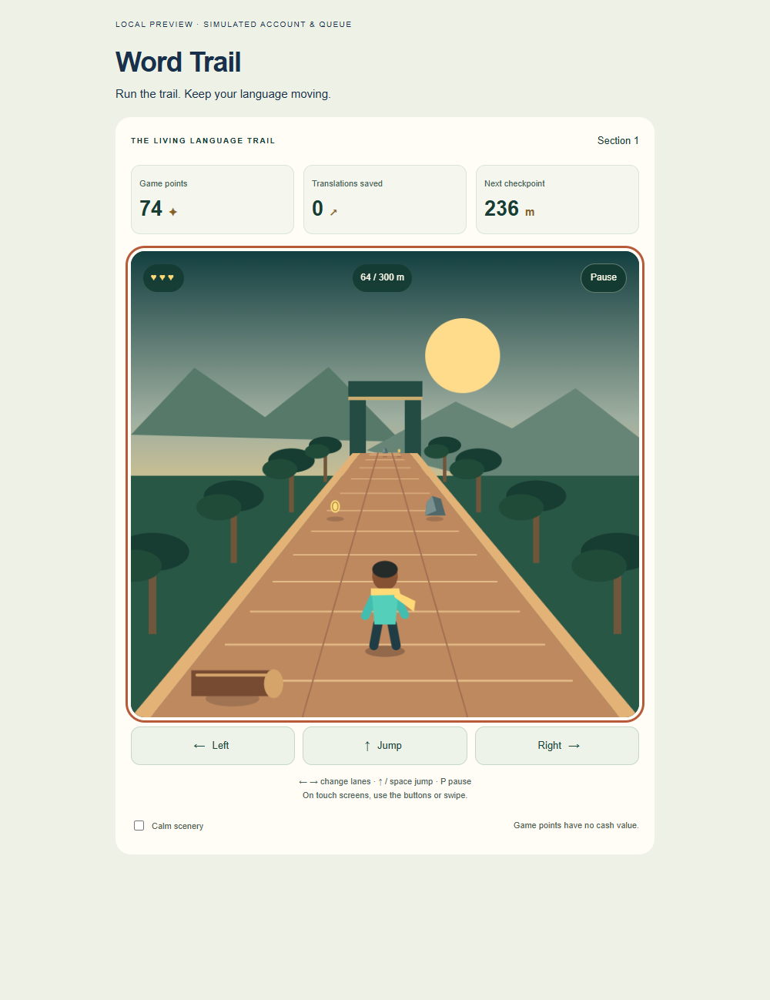
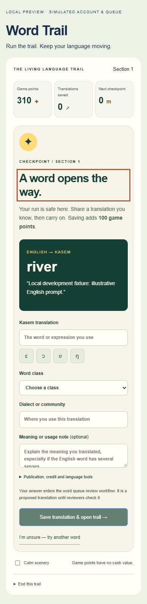

A run can do more than set a score. Word Trail, a new experiment in Indigen World Labs, turns a three-lane obstacle course into a reason to share a word you know.
Guide a runner along a fictional woodland trail, dodge rocks, jump over logs and collect golden sparks. Each section gets faster until the speed reaches its limit. You have three lives to reach the next gate.

Every 300 metres, the game pauses at a contribution checkpoint. It chooses an English word from your existing word queue and asks how you say it in Kasem. Add your translation, word class and dialect or community. A meaning or usage note can help reviewers understand the sense you translated.
Choose Save translation & open trail. Your answer enters the same contributor review workflow as other word queue translations. Once the answer and checkpoint are saved together, the next section opens and you receive 100 additional game points.
You do not need to wait for a review decision to resume. Saving an answer means it has been received, not that its language accuracy has been verified or that it is published in the dictionary.

This experiment is for Kasem speakers and contributors who want a playful route into the word queue. If you are unsure of a prompt, choose another word. Changing prompts does not open the gate or earn a translation bonus. If no suitable queue word is available, the game keeps the checkpoint closed and offers a way to check again later.
The permission options let you choose publication after review, anonymous or account-name credit, and whether the answer may be used to test and train Indigen language tools. Training permission starts off.
Saved checkpoint progress and points stay with your account. Reloading during a run restarts that section; unsaved form writing does not survive a reload. Losing your three lives lets you retry the current section while keeping points already saved at earlier gates.
Availability: This signed-in web alpha is implemented and tested locally. Production deployment verification is pending at the time this draft was prepared. An internet connection is required to load and save checkpoints. The game currently asks for English-to-Kasem translations. Game points describe this trail only: they are separate from reviewed contributor rewards, and have no cash value. There is no public leaderboard.